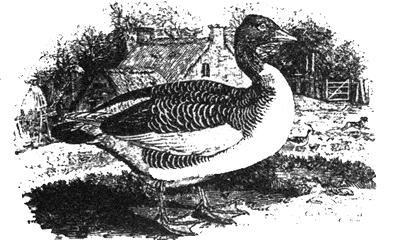
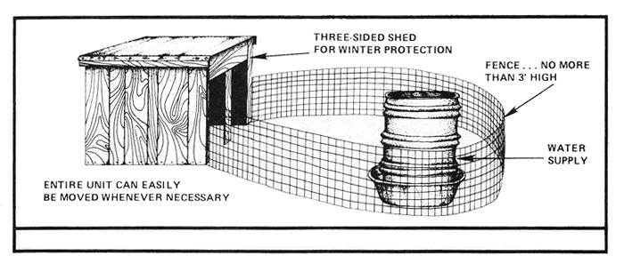
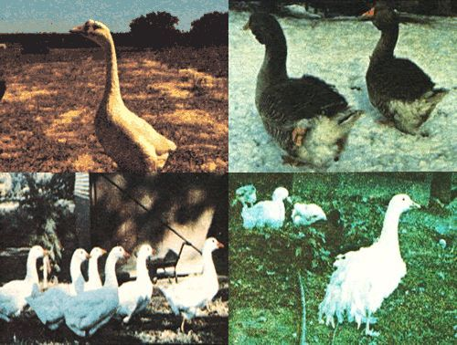

The Homestead Goose
Whatever the size of your spread, geese can be the most economical, useful and easiest-to-keep live stock on the farm, including geese variety guide.
By William and Linda Bayliss
January/February 1976
Issue # 37 - January/February 1976
Whether they owned a lot in town or fanned a half section, many of our ancestors felt that geese were a necessary part of the Complete Homestead. And that was good thinking: the big, versatile waterfowl eat little, practically raise themselves, make ideal "watchdogs", and supply their owners with meat, eggs, down, fat, and liver. Small wonder then that, at least in times past, geese have been valued highly-even considered indispensable-by the self sufficient family living on the land.
But that was before the days of "agribusiness" and its accelerating tendency to concentrate on animals and birds that can be raised intensively in confined spaces by modern "scientific" means. Needless to say, the independent and pugnacious goose-which thrives best when allowed to roam freely and select exactly the random diet of bugs, bark, and grass that it happens to want at the moment-hasn't taken kindly to this "progressive" trend.
Then, too, the delicious meat of this boisterous bird has somewhere along the line-acquired a reputation for being "peasant" fare in our nation of conspicuous beefeaters.
And so we now find the goose rapidly disappearing from the farms and tables of North America. And more's the pity for that unhappy fact at least in our estimation. We've been able to become less and less dependent on the city and its ill-gotten gains and more and more self-sufficient over the past few years precisely because-at least in part-of the geese we've raised. We recommend them highly.
GEESE ARE GREAT
For one thing, geese are big (full-grown adults can-depending on breed and sex-weigh in at 8 to 26 or more pounds apiece). That's a lot of meat, and several meals, for the average family.
For another, these birds put on that weight very inexpensively. They eat a lot less per pound of gain than either chickens or ducks, and the mainstay of their diet during the summer, if you give them the run of your yard, can be nothing more costly than common, ordinary grass. In the winter, they'll do well on lower-protein (therefore, less expensive) grains such as oats with just a little corn thrown in for heat.
And geese have yet another very important point in their favor: their health and longevity. Like other waterfowl, they're susceptible to virtually no contagious diseases and barring accidents-a pair of breeders can outlive their owner (a twenty-year-old goose is no rarity).
HOW TO START A FLOCK OF YOUR OWN
If you establish your colony of geese by buying a pair or trio of market-variety mature (at least two years old) adults, you can probably increase the flock by just letting nature take its course. (Exhibition geese, as explained in the sidebar with this article, may require some special attention.)
Geese, unlike many other birds, prefer to live a monogamous life and-once mated-will remain faithful for years. A pair (one male, known as a gander, and one female, called a goose) makes, the best union of all although many breeders match each of their ganders with two females. Whichever way you choose to go, you're probably wise to purchase your initial breeding stock the summer or fall before you intend to set your first hatch of geese a gander and his female or females usually must live together for some months before they'll mate.
To make sure your new geese mate in pairs or trios (if you didn't buy them already matched), lock them together in a pen or yard in twos or threes when you first get them. This is especially important if you're beginning with more than a single pair or trio, since you don't want any one gander to claim more than two geese. (If a male tries to mate with too many females, you'll wind up with infertile eggs.) And, by the way, sexing geese of any age-except for special breeds, such as Pilgrim-can be tricky. In general, though, the females tend to be smaller-with shorter necks and rounder bodies than the males. If you can't tell the difference at the start, find someone who can or you're liable to find yourself mating two ganders together!
Properly mated, a goose of one of the heavier breeds can lay about 20 eggs in the spring although she'll be able to cover only 12 or 15. If you want to add the maximum number of new goslings to your flock, then, it's best to take the first six or eight eggs from each female (and hatch them under a broody hen or duck or in an incubator) before letting her set.
The females won't lay until March or April in northern climates and-since the incubation period for their eggs varies from 28 to 35 days (the bigger, fancier exhibition breeds take the longest to hatch)it will probably be reasonably warm outside when the goslings break their way out of the shells. It's also quite probable that your mother goose or geese will be completely capable of taking care of the babies by herself or themselves and will insist on doing just that.
Of course, if you wish, you can start your flock in one or both of two other ways:
[1] by purchasing fertile goose eggs and hatching them in an incubator or under broody hens or ducks, or
[2] by buying day-old goslings at $1.50 to $5.00 each-from a hatchery or another breeder. Although they haven't always been available to individual homesteaders, there are small incubators on the market that will hatch goose eggs. (The Roll-X and D-1512 are two such machines now handled by MOTHERS General Store, Box 506, Flat Rock, North Carolina 28731 and, I'm sure, by other mail-order dealers.MOTHER.)
If you prefer to set your eggs under broody hens or ducks, remember that goose eggs are big, and that some hens can cover only one of them and some ducks no more than five or six.
(EDITORS NOTE: The old HAVE-MORE Plan by Ed and Carolyn Robinson-which rugs reprinted in MOTHER NO. 2contains a two-page chapter on the homestead production of geese. In it, the Robinsons say that they found a broody hen could cover four to five goose eggs. "Start her setting on some hen eggs for a couple of days, " they say, "to make sure she's really serious about hatching a family before trusting your geese eggs to her. "
Ed and Carolyn also point out that goose eggs-unlike others may be washed before setting and, when placed under a hen, should be turned once a day by hand since they're too big for a chicken to roll over. The hen should be taken off the nest every day for food and water, but not allowed to stay awry from the eggs long enough for them to chill.
During the last week of the set, the eggs should be sprinkled with lukewarm water each day (to duplicate what happens when a goose returns to her nest with damp feathers). Once the goslings begin to hatch, it will take as long as 24 hours for each little bird to break out of its shell. DON'T HELP IT but do remove the baby geese from the nest as they hatch, so the hen won't become so excited by the first goslings that she leaves the rest prematurely.)
ARTIFICIALLY INCUBATED GOSLINGS ARE HEARTY BUT DO NEED SOME CARE
If the weather is mild, newly hatched (or, if you buy them, day old) goslings separated from their natural mothers should be brooded (that is, warmed by artificial heat) for about two weeks (compared to six for baby chickens).
This brooding may be done in a low frame (see the illustration with this article) and a single large light bulb can be used as the heat source. Adjust the temperature inside the mini-brooder so that the goslings spread out comfortably when resting there rather than bunching up too closely together. In warm weather a good-sized, capped jar of hot water can supply all the heat needed by the baby geese.
IMPORTANT: Note that the little shelter shown with this article is fitted with a waterproof top. Goslings-no matter what you may have thought-must be protected from the rain! Their first down simply won't turn water for more than five or ten minutes at a time and the baby geese must be able to "come in out of the wet" as they see fit. And we did say, "as they see fit".
The goslings do know enough to come in when and as necessary if given the chance, and they should not be penned up just because you're afraid they might get damp. Provide the babies with a warm shelter that they can use at their own discretion and let it go at that but do provide that shelter from the cold rains of spring. Later-when the young geese are four weeks old and have sprouted back feathers-they'll begin to choose to stay outside during summer's warmer showers.
Your new babies should be given access to tender, fresh grass right from the beginning (just don't let the little goslings out at the start while the dew is still on their pasture). This natural feed can be supplemented at first with lettuce and other greens, rolled oats, bread soaked in milk, cornmeal, or a commercial duck starter. (Incidentally, commercial starters for ducks contain very few additives-since ducks cannot tolerate them and so we feel that these feeds make a good all-purpose starter for any "organic" flock of poultry.)
GIVE 'EM MORE FREEDOM AS THEY GROW UP
As soon as the goslings outgrow their need for brooding, you can transfer them to a fenced run (if the run is small, it should be moved frequently so that the developing geese will always have access to all the tender, young shoots of grass they want). A fence no more than three feet high should be sufficient to corral the geese but, if you have trouble with stray dogs, you may want to protect the youngsters with a more substantial pen until they're big enough to take care of themselves.
We think the best plan is to just fence in your strawberry patch and let the growing birds weed it for you. They won't hurt the plants (although they will have to be banned from the area as the luscious red fruit begins to ripen) and-if you put their supplemental feed at one end of the field and their water at the other-they'll do an excellent job of keeping the grass down. Of course, since the developing babies have no mother to protect them, you'll want to lock them up every night until they weigh about five pounds each away from the owls, raccoons, and foxes .
AND MORE FREEDOM YET AS THEY MATURE
By the time your geese are three-quarters grown, they'll be able to look after themselves no matter what happens unless you have some really voracious predators in your neighborhood. The birds are fearless, will attack anything, and are more than a match for the rats, cats, and dogs that sometimes play havoc with other poultry. Geese are also smart: If bothered by something that they feel they can't handle in a fair fight, they'll quickly paddle out onto a stream or lake-if it's available-and stay there until whatever's bothering them goes away.
This is not, as many people suppose, to say that geese can thrive only on farms or homesteads equipped with a large body of water. As a matter of fact, you needn't have any natural water on your place if you intend to keep the birds. (Unlike ducks, geese won't spend all day in a pond even when given the chance.) Just be sure that both your goslings and mature birds have a trough to splash in and drink from as they desire. Especially when your females are setting (goose eggs must be dampened occasionally during the period leading up to a hatch and setting mothers like to leave their nests and wet their feathers from time to time for precisely this reason).
Nor will your hearty flock need much in the way of shelter. Mature geese thrive quite nicely throughout the southern and middle United States with no real protection from the weather at all. And in the North, a simple three-sided shed or lean-to made of straw is usually all the house they want during the winter.
Feeding a colony of the big waterfowl, likewise, is not much of a problem. They generally prefer to forage their own grass, bugs, and whatever takes their fancy and-as already mentioned in this article-really need supplemental feed only during their first few weeks and the coldest part of the year.
We like to run our geese in the garden during the fall and winter. This allows them to forage much of their living while they destroy many of the carried-over insects in the soil and completely strip the vegetable patch of all vegetation left after the first frost. If you try this, just remember to take the birds out of the garden a month or so before you're ready to start planting in the spring (so their droppings can rot down before it's worked into the soil) and your vegetable patch will have richer earth, fewer weeds, and less bugs to work with the following summer.
ONE CAUTION: Don't let your geese into the orchard unless you've encircled the trunks of all young trees with wire (not tape they'll eat it). The birds love the bark of developing trees and will strip enough off-very quickly!-to kill the whole orchard. Only when the trees have old bark growing as far up their trunks as the geese can reach, will the birds leave them alone.
AND THAT'S IT!
Geese-except for the few cautions noted in this piece-are great multi-purpose birds that belong on every homestead. They'll weed your strawberries, gain a pound a week on nothing but grass, act as guardians of your property, furnish you with meat, eggs, fat, down, and feathers, and-especially if you raise the exhibition breeds-put a sizable crop of cash in your jeans.
Geese. We love 'em!
It's best, if you can afford the breeding stock, to raise show type purebred geese. They cost no more to keep and are much more valuable when (and if) you want to sell them. Here are some of the most common varieties:
CHINESE. These are the "watchdog" geese. Keep them a long way from your house, because they're definitely the noisiest of all breeds. They're also one of the most elegant and beautiful varieties and they look like swans when they're out on a pond. Chinese geese aren't large (only 8 to 12 pounds each when mature) but they breed well, eat little, and come in two colors: brown or white.
EMBDEN. This is the big, dignified, white goose that can weigh up to 26 pounds. (So-called "market" strains may not get this big, but are preferred because they're more fertile.) The Embden's eggs are quite large and its abundant white down is especially valuable. This down may be plucked from the goose when it molts or when a female is about to go broody. Another way to harvest the down and breast feathers is to let the broody female pluck them out herself and use them to line her nest. Then all you have to do is steal the lining that is, if you don't mind arguing with a Betty goose!
TOULOUSE. The largest variety of all (mature ganders weigh 26 pounds or more). Exhibition Toulouse geese have a large dewlap and a very low keel (the bottoms of old and heavy birds, in fact, will drag the ground). The best show specimens are worth $100 to $150 each when they reach breeding age (one year). At those prices-considering their diet, longevity, and productivity (about four goslings a year)-a pair of Toulouse breeders can produce a good deal of profit for a homesteader. A warning, though: Infertility is often a problem with show birds and the larger the goose, the less fertile it's apt to be. For that reason many folks who raise exhibition Toulouse geese use artificial insemination, thus increasing a pair's productivity to as many as a dozen goslings a year. A pair of market variety Toulouse geese, on the other hand, can raise up to twenty offspring annually without any such help but they lack dewlaps and keels and sell for only about $10.00 each.
OTHER VARIETIES. African (something like a very heavy Chinese), Pilgrim (which feature sex-linked colors that allow you to tell them apart when they're hatched), Sebastopol (curly feathers), Canadian (you'll need a game permit), and Roman Crested (white, with a tuft of feathers on top of the head) are some of the other breeds of geese that can grace your barnyard. You, in short, should have no trouble finding a variety that suits your fancy.
|
 If you have the money, it's best to keep purebred geese, UPPER LEFT: A white Chinese gander, UPPER RIGHT: A pair of exhibition Toulouse geese. BOTTOM LEFT: A gaggle of Embden geese. BOTTOM RIGHT: A feathery Sebastpol gander |
 |
 |
|
 |
|
|